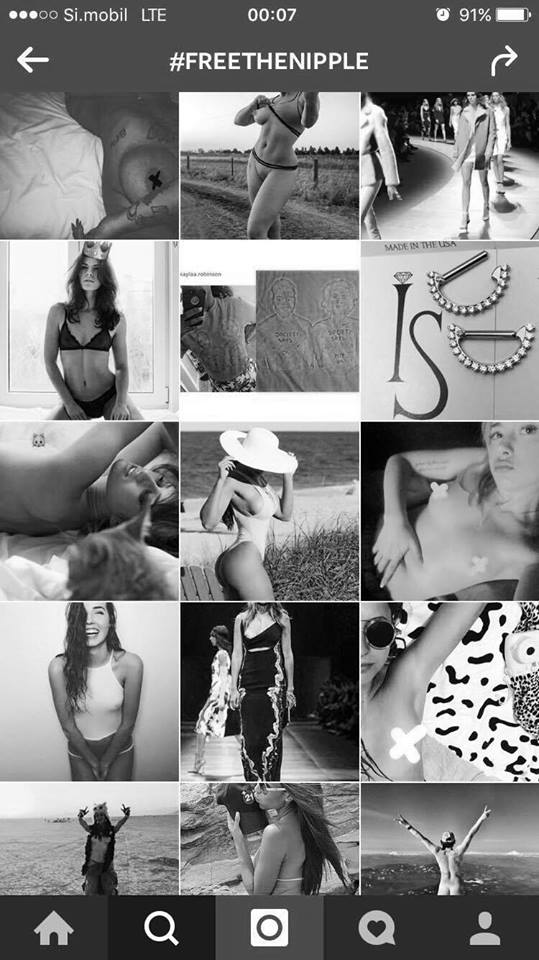

Priljubljenost Instagrama se je čez leta večala in tako je postal tema tujih in slovenskih medijev. Na tem družbenem omrežju so se začeli razvijati številni trendi in pojavljati so se začele oznake za ljudi, ki objavljajo določene vsebine, kot so npr. „foodieji“(uporabniki, ki na svojem Instagram profilu objavljajo fotografije svojih obrokov).
Politika Instagrama, ki prepoveduje objavljanje golih ženskih prsi, je vzbudila tako imenovano gibanje #FreeTheNipple, o katerem so se razpisali tako tuji kot slovenski mediji. Popularnost objavljanja poraščenih ženskih pazduh tudi ni ostala neopažena. Spletni portal MMC je poraščenost pazduh označil za trend letošnjega poletja. Nekateri tuji mediji so se fenomena lotili bolj kritično. Poraščenosti ne označujejo za trend, temveč za problem neenakosti in neenakopravnosti spolov ter kot obliko umetnosti.
